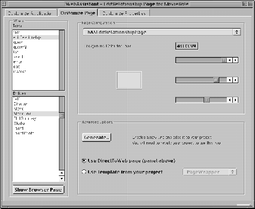
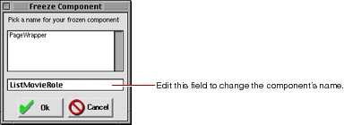

Table of Contents
Table of Contents  Next Section
Table of Contents
Next Section
Table of Contents  Previous Section
Previous Section
To save a page as a component:

You can't select "*all*" to generate multiple components. You must generate the components one at a time.
The Freeze Component window appears. It contains a text field with a default name for your page (the page name followed by the entity name). You can edit the name if you choose.

Direct to Web generates a component and adds it to your project. (You may have to wait a few moments for this process to complete.) Your settings are automatically saved.
When you generate a page and click Update, the browser's current page doesn't reflect the changes. To use the new component, you must rebuild the application, relaunch it, and then navigate to a new instance of the page. For example, if the current page is a Movie query page, and you use the WebAssistant to freeze it, you must rebuild the project with the frozen component, then launch the application and navigate to a new instance of Movie query (by clicking Build Query); the new instance uses the frozen component.
The generated component is like any other WebObjects component. You can edit your component graphically using WebObjects Builder. You can also examine the HTML and bindings (.wod file) of the new component in Project Builder.
Direct to Web also generates Java code for your component, which you can modify appropriate to your needs. Each component implements an interface that is appropriate to the page: QueryPageInterface, ListPageInterface, InspectPageInterface, and EditPageInterface. For example, the QueryMovieRole.java file shown below implements the QueryPageInterface. For example, it contains an action method called queryClicked that returns a component when the Query DB button is clicked. (Note that the component's submit button is bound to queryClicked in QueryMovieRole.wod.)
Table of Contents Next Section